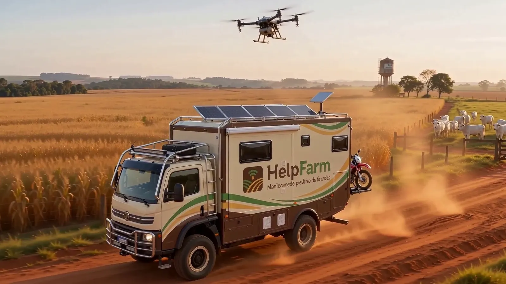
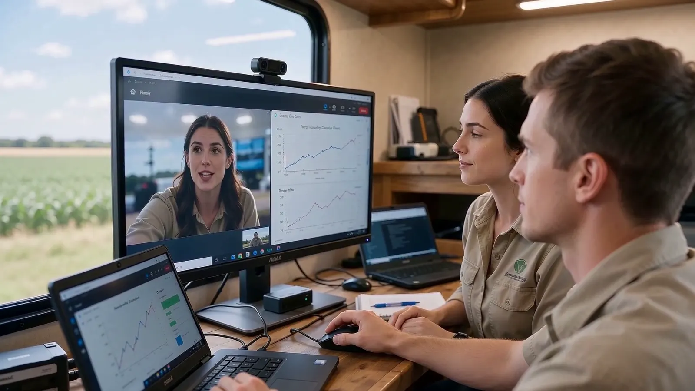
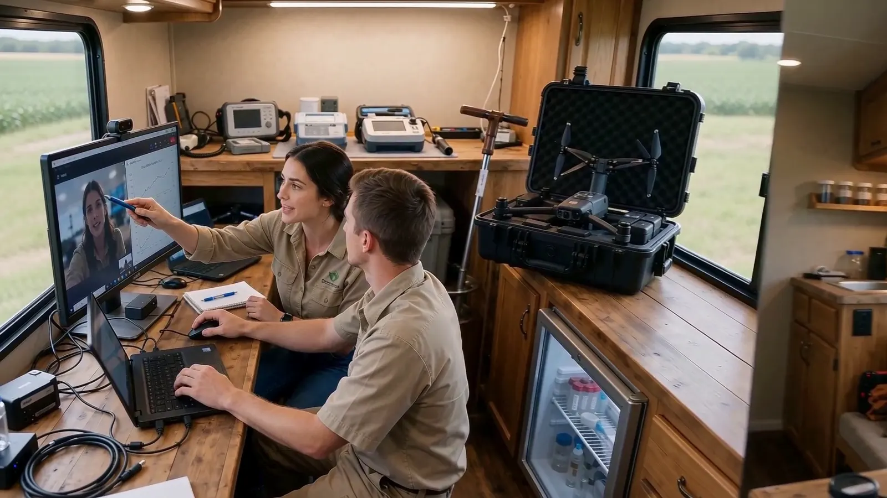
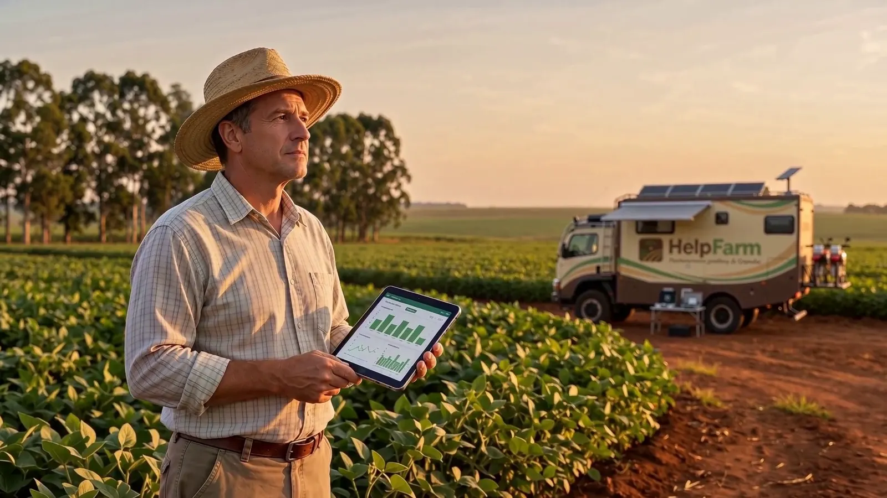

Help Farm / Unidade móvel
O laboratório de campo que dorme na fazenda.
Um motorhome 4x4 de 7,75 m sobre chassi de caminhão leve leva dois profissionais, drones e instrumentos portáteis até a fazenda. Eles ficam instalados o tempo necessário para medir todas as variáveis, deixam os sensores fixos funcionando e criam a assinatura de referência de cada talhão, rebanho e máquina.
Tudo cabe num motorhome.
- Dois profissionais instalados — Um agrônomo e um técnico (ou veterinário) ficam na fazenda durante a campanha de medição, sem depender de hotel na cidade.
- Dormitório, cozinha e banheiro — Beliche para dois, cozinha compacta com fogão, pia e geladeira, banheiro com chuveiro, caixa d’água de 500 L e ar-condicionado.
- Toldo e mesa de campo — Toldo lateral puxado do teto, com mesa e cadeiras: a dupla trabalha na sombra ao lado do veículo.
- Energia própria — Painel solar no teto com baterias de lítio para instrumentos, drones e a vida a bordo.
- Conectada em qualquer lugar — Antena satelital no teto: os dados sobem para o motor RAPP no mesmo dia.
- Duas motos trail — No suporte traseiro, para chegar a talhões, pastos e aguadas onde o motorhome não entra.
- Visita ou temporada — Numa visita, mede e instala os sensores; nas fazendas que precisam de acompanhamento contínuo, fica estacionada a temporada inteira.
- Drones a bordo — Voos multiespectrais e de mapeamento no primeiro dia; a mesma rota se repete nas visitas seguintes.
Uma visita da unidade móvel
46 s
- O motorhome chega pela estrada de terra com a dupla, drones e motos
- Drones voam a fazenda e marcam os pontos a medir
- De moto, solo, planta, água, rebanho e máquinas são medidos
- Sensores ficam instalados e a primeira assinatura sobe por satélite
A unidade móvel em ação.




Imagens conceituais geradas para o filme institucional.
Um motorhome de série, adaptado para medir.
Partir de um modelo que já é fabricado reduz prazo e custo: o veículo vem pronto para morar, e a adaptação fica só no que é de medição.
- Base — motorhome 4x4 de 7,75 m sobre chassi de caminhão leve 4x4, já fabricado em série no Brasil, para estrada de terra
- Acomodação — de 6 lugares de passeio para 2 profissionais em beliche; o espaço liberado vira laboratório
- Sala — a sala com mesa dá lugar à bancada de medição, com instrumentos, drones e geladeira de amostras
- Banheiro e água — banheiro com chuveiro; caixas de 500 L de água limpa, 200 L de servida e 100 L de detritos (modelo de série)
- Energia — painel solar com controlador e bateria estacionária de série, mais baterias de lítio e inversor na adaptação
- Internet — antena satelital no teto, para subir os dados no mesmo dia
- Traseira — suporte de motos de série, reforçado para levar 2 motos trail simples
- Apoio externo — cozinha e chuveiro externos de série e toldo para montar a bancada de campo ao lado do veículo
O kit de medição inicial.
Proposta de partida, a validar com a equipe técnica. Começamos com instrumentos portáteis; o que se mostrar mais útil vira sensor fixo na fazenda.
- Solo — penetrômetro digital (compactação), sonda TDR portátil (umidade), medidor de pH, condutividade e temperatura, espectrômetro NIR portátil (matéria orgânica e nutrientes) e trado para amostras georreferenciadas
- Lavoura — drone multiespectral (vigor e estresse), drone de mapeamento (ortofoto e relevo), medidor de clorofila, câmera termográfica e refratômetro
- Clima e água — estação meteorológica portátil, sensor de molhamento foliar, pluviômetros e sonda multiparâmetro para bebedouros, açudes e poços
- Gado — leitor de brinco eletrônico, balança portátil, termômetro infravermelho e bolus para os animais sentinela
- Máquinas — analisador de vibração portátil, pinça amperimétrica e leitor do barramento CAN/ISOBUS de tratores e colheitadeiras
- Posição — receptor GNSS RTK para que cada ponto medido volte ao mesmo lugar na próxima visita
O que acontece na fazenda.
Chegada e voo
Base montada, drones voam a fazenda inteira e o mapa de vigor sai no mesmo dia.
Pontos de medição
De moto, a dupla mede solo, planta e água nos pontos escolhidos pelo mapa e marca cada um com GPS de precisão.
Rebanho e máquinas
Pesagem e leitura dos brincos, bolus nos animais sentinela, vibração e corrente de pivôs, bombas e tratores.
Sensores e assinatura
Gateway e sensores fixos instalados; o RAPP recebe a primeira assinatura basal e passa a vigiar a fazenda.